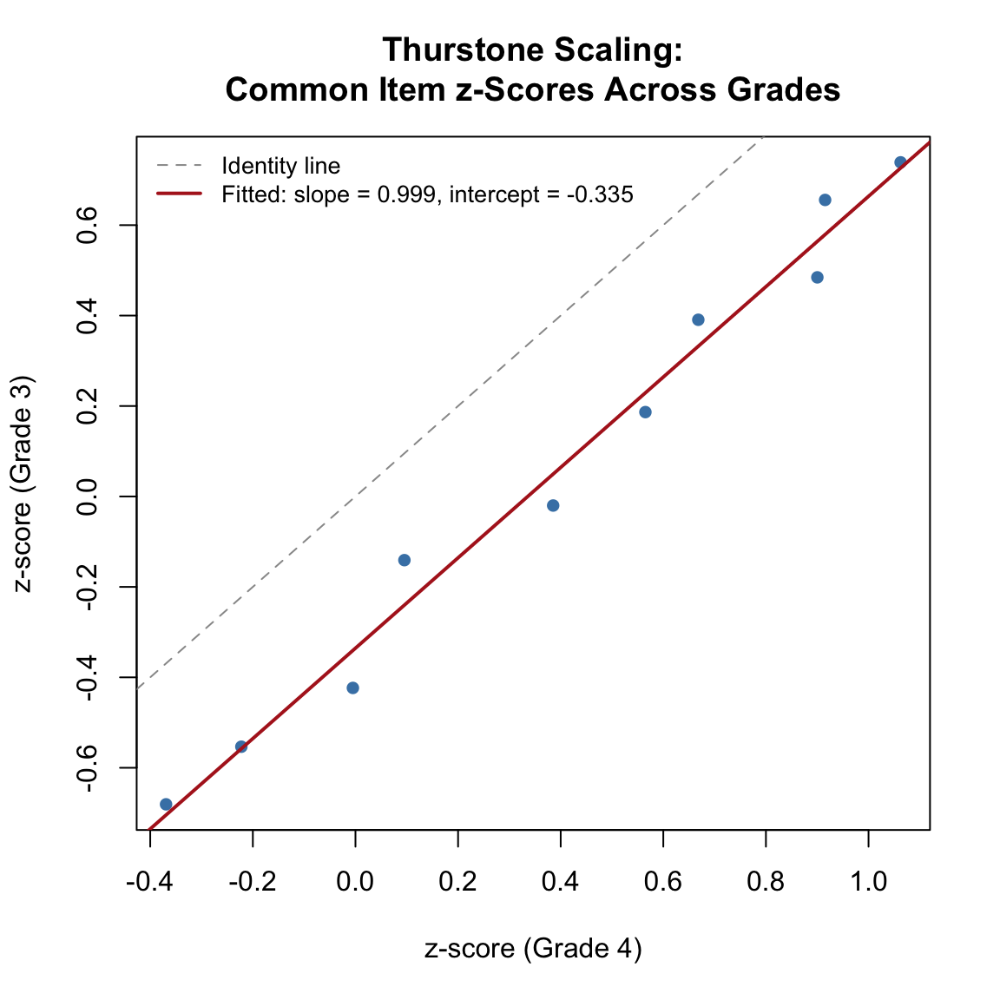
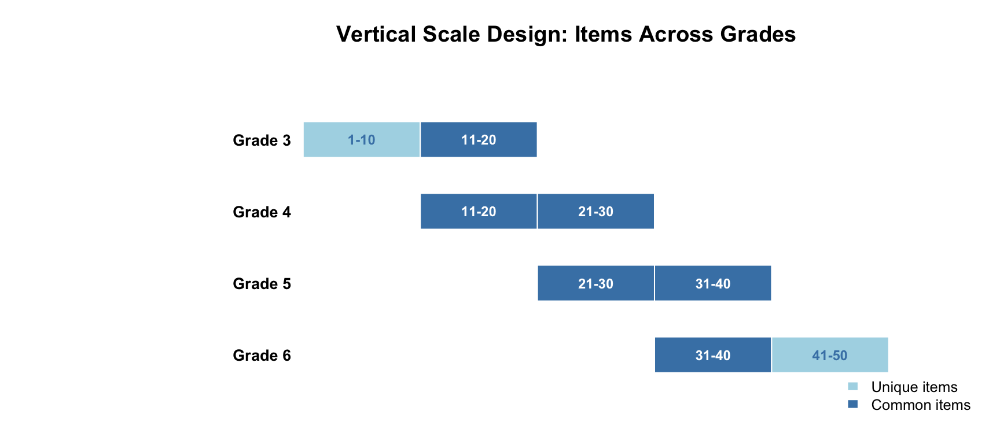
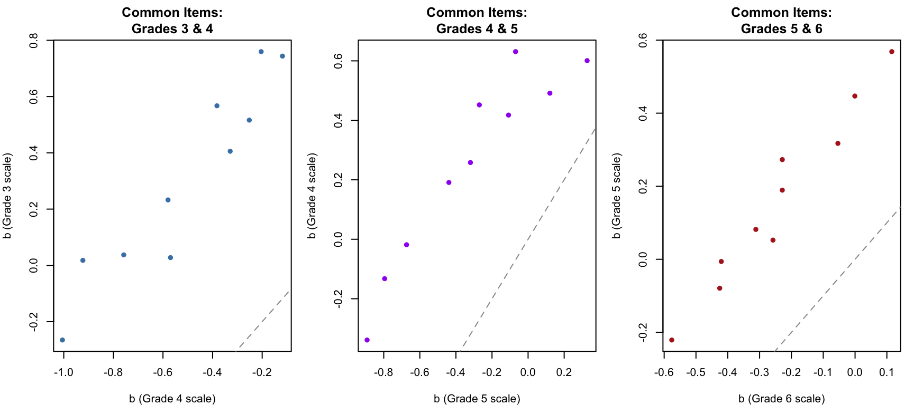
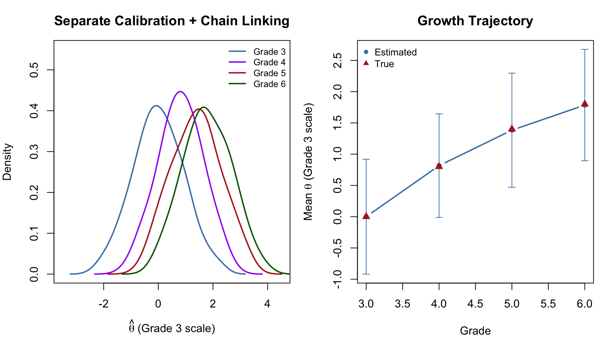
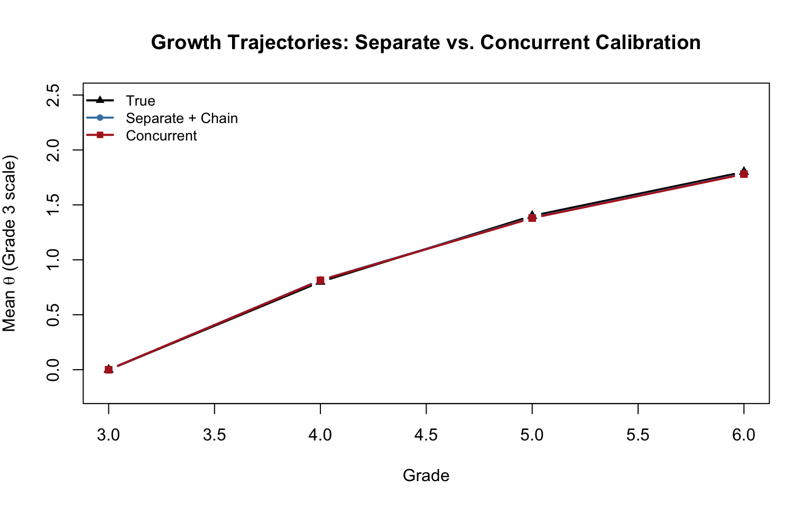

Code
library(mirt)
library(dplyr)
library(kableExtra)When we want to track student growth across grades, we need a way to place test scores from different grade-level tests onto a common scale. A third grader’s score on a grade 3 math test and a fourth grader’s score on a grade 4 math test are not directly comparable—the tests differ in content and difficulty. Vertical scaling is the psychometric process of creating a score scale that spans multiple grade levels, making it possible to express growth in terms of changes in magnitude.
This tutorial walks through two approaches to building a vertical scale:
Both approaches rely on the same core idea: common items administered across adjacent grade levels serve as a bridge to link the scales together. Throughout, we use the mirt package in R.
Prerequisites: This tutorial assumes familiarity with IRT basics, the Rasch model, and the IRT equating concepts covered in the companion tutorial IRT Equating Using mirt (especially separate and concurrent calibration). The new concept here is chain linking—extending the equating logic across more than two grade levels.
library(mirt)
library(dplyr)
library(kableExtra)Thurstone (1925) proposed a method for placing test items from different age or grade groups onto a common scale. The key insight is this: if the same item is given to students in two different grades, we can use the proportion of students answering correctly in each grade to estimate how far apart the two groups are on an underlying ability scale.
The method assumes:
Let’s simulate data to illustrate. Imagine a set of 10 common items given to 500 students in each of two adjacent grades. Grade 3 students have lower ability on average.
set.seed(2026)
# True ability distributions
n <- 500
theta_g3 <- rnorm(n, mean = 0, sd = 1)
theta_g4 <- rnorm(n, mean = 0.8, sd = 1)
# 10 common items (Rasch model, a = 1 for all)
n_common <- 10
b_common <- seq(-1.5, 1.5, length.out = n_common)
# Simulate responses (Rasch ICC: P = 1 / (1 + exp(-(theta - b))))
sim_rasch <- function(theta, b) {
resp <- matrix(NA, length(theta), length(b))
for (j in seq_along(b)) {
p <- 1 / (1 + exp(-(theta - b[j])))
resp[, j] <- rbinom(length(theta), 1, p)
}
resp
}
resp_g3 <- sim_rasch(theta_g3, b_common)
resp_g4 <- sim_rasch(theta_g4, b_common)p_g3 <- colMeans(resp_g3)
p_g4 <- colMeans(resp_g4)
data.frame(
Item = 1:n_common,
b_true = round(b_common, 2),
p_Grade3 = round(p_g3, 3),
p_Grade4 = round(p_g4, 3)
) |>
kable("html", col.names = c("Item", "True b", "p (Grade 3)", "p (Grade 4)")) |>
kable_styling(full_width = FALSE)| Item | True b | p (Grade 3) | p (Grade 4) |
|---|---|---|---|
| 1 | -1.50 | 0.770 | 0.856 |
| 2 | -1.17 | 0.744 | 0.820 |
| 3 | -0.83 | 0.686 | 0.816 |
| 4 | -0.50 | 0.652 | 0.748 |
| 5 | -0.17 | 0.574 | 0.714 |
| 6 | 0.17 | 0.492 | 0.650 |
| 7 | 0.50 | 0.444 | 0.538 |
| 8 | 0.83 | 0.336 | 0.498 |
| 9 | 1.17 | 0.290 | 0.412 |
| 10 | 1.50 | 0.248 | 0.356 |
As expected, the proportion correct is higher in grade 4 for every item—the items are easier for the higher-ability group.
Thurstone’s insight was to use the inverse of the normal CDF to convert each proportion correct into a z-score. If ability is normally distributed in each grade, then the z-score tells us where the item sits relative to the mean of that grade’s distribution, in standard deviation units.
# Clip proportions away from 0 and 1 to avoid infinite z-scores
clip <- function(p, eps = 0.005) pmin(pmax(p, eps), 1 - eps)
z_g3 <- qnorm(clip(p_g3))
z_g4 <- qnorm(clip(p_g4))If the two distributions have the same SD, the z-scores should be perfectly linearly related with slope = 1. If the SDs differ, the slope captures the ratio. The intercept captures the difference in means.
The theoretical relationship is:
\[z_3 = A \cdot z_4 + B\]
where \(A = \sigma_4 / \sigma_3\) and \(B = (\mu_3 - \mu_4) / \sigma_3\).
plot(z_g4, z_g3, pch = 16, col = "steelblue",
xlab = "z-score (Grade 4)", ylab = "z-score (Grade 3)",
main = "Thurstone Scaling:\nCommon Item z-Scores Across Grades")
abline(a = 0, b = 1, lty = 2, col = "gray60")
# Fit the regression line
fit_lm <- lm(z_g3 ~ z_g4)
abline(fit_lm, col = "firebrick", lwd = 2)
legend("topleft",
c("Identity line", paste0("Fitted: slope = ", round(coef(fit_lm)[2], 3),
", intercept = ", round(coef(fit_lm)[1], 3))),
lty = c(2, 1), col = c("gray60", "firebrick"), lwd = c(1, 2),
cex = 0.85, bty = "n")
A_thur <- coef(fit_lm)[2]
B_thur <- coef(fit_lm)[1]
cat("Thurstone linking constants:\n")Thurstone linking constants:cat(" A (SD ratio, Grade 4 / Grade 3) =", round(A_thur, 4), "\n") A (SD ratio, Grade 4 / Grade 3) = 0.9993 cat(" B (location shift) =", round(B_thur, 4), "\n") B (location shift) = -0.3355 cat(" Correlation between z-scores:", round(cor(z_g3, z_g4), 4), "\n") Correlation between z-scores: 0.9914 cat("\nImplied Grade 4 mean on Thurstone's absolute scale:",
round(-B_thur / A_thur, 3), "SD units above Grade 3\n")
Implied Grade 4 mean on Thurstone's absolute scale: 0.336 SD units above Grade 3The z-scores are nearly perfectly correlated and fall close to a line with slope near 1 (since both grades have the same true SD). The negative intercept reflects the fact that grade 3 students have lower ability, so items are harder for them relative to their group mean. The key diagnostic is the strong linear relationship—this is what gives Thurstone confidence that a common scale exists.
An important subtlety: The magnitude of the Thurstone \(B\) constant is not directly comparable to the true mean difference in the underlying ability metric (which was 0.8 logits in our simulation). When we apply the inverse normal CDF to proportion correct, the resulting z-scores reflect a compressed version of the ability scale. This compression occurs because each proportion correct aggregates over the entire distribution of student abilities, attenuating the signal. Specifically, the Thurstone \(B\) captures approximately \((\mu_3 - \mu_4) / \sqrt{1 + D^2\sigma^2}\), where \(D \approx 1.7\) is the logistic-to-normal scaling constant. Thurstone’s absolute scale is self-consistent—it validly places grades on a common continuum—but its units are distinct from IRT logit units.
Thurstone’s method is the historical precursor to IRT-based vertical scaling. The key parallel:
The critical advantage of IRT is that it estimates item parameters and person parameters separately, avoiding the compression that comes from working with aggregate proportions. Under the Rasch model, where all items have equal discrimination (\(a = 1\)), the IRT linking constants simplify to \(A = 1\) and \(B = \bar{b}_3 - \bar{b}_4\) for the common items—the same logic as Thurstone, but applied to IRT difficulty estimates rather than z-scores, yielding estimates on the logit scale.
We simulate data from a common-item nonequivalent groups design spanning grades 3–6. Each grade has a 20-item test. Adjacent grade tests share 10 common items in a sliding-window pattern:

data.frame(
Grade = c("Grade 3", "Grade 4", "Grade 5", "Grade 6"),
Items = c("1-20", "11-30", "21-40", "31-50"),
Common_Below = c("---", "11-20 (with Gr 3)", "21-30 (with Gr 4)", "31-40 (with Gr 5)"),
Common_Above = c("11-20 (with Gr 4)", "21-30 (with Gr 5)", "31-40 (with Gr 6)", "---"),
Unique = c("1-10", "none", "none", "41-50")
) |>
kable("html",
col.names = c("Grade", "Items on Test", "Common w/ Grade Below",
"Common w/ Grade Above", "Unique Items")) |>
kable_styling(full_width = FALSE)| Grade | Items on Test | Common w/ Grade Below | Common w/ Grade Above | Unique Items |
|---|---|---|---|---|
| Grade 3 | 1-20 | --- | 11-20 (with Gr 4) | 1-10 |
| Grade 4 | 11-30 | 11-20 (with Gr 3) | 21-30 (with Gr 5) | none |
| Grade 5 | 21-40 | 21-30 (with Gr 4) | 31-40 (with Gr 6) | none |
| Grade 6 | 31-50 | 31-40 (with Gr 5) | --- | 41-50 |
This sliding-window design uses 50 distinct items across 4 grades, with each test containing 20 items and 10 common items linking each adjacent pair. Items get progressively harder from grade 3 to grade 6.
set.seed(2026)
n_items <- 50
n_students <- 1000
# Item difficulties: progressively harder across the item pool
# Range chosen so each grade's test is well-targeted to its ability level
b_true <- seq(-0.5, 2.4, length.out = n_items) + rnorm(n_items, 0, 0.2)
# True ability distributions (decelerating growth)
theta_true <- list(
g3 = rnorm(n_students, mean = 0.0, sd = 1.0),
g4 = rnorm(n_students, mean = 0.8, sd = 1.0),
g5 = rnorm(n_students, mean = 1.4, sd = 1.0),
g6 = rnorm(n_students, mean = 1.8, sd = 1.0)
)
# Which items go on which test?
items_g3 <- 1:20
items_g4 <- 11:30
items_g5 <- 21:40
items_g6 <- 31:50
cat("True population parameters:\n")True population parameters:data.frame(
Grade = paste("Grade", 3:6),
Mean = c(0.0, 0.8, 1.4, 1.8),
SD = rep(1.0, 4),
Growth = c("---", "0.8", "0.6", "0.4")
) |>
kable("html", col.names = c("Grade", "Mean (θ)", "SD (θ)", "Growth from Prior Grade")) |>
kable_styling(full_width = FALSE)| Grade | Mean (θ) | SD (θ) | Growth from Prior Grade |
|---|---|---|---|
| Grade 3 | 0.0 | 1 | --- |
| Grade 4 | 0.8 | 1 | 0.8 |
| Grade 5 | 1.4 | 1 | 0.6 |
| Grade 6 | 1.8 | 1 | 0.4 |
We have built in decelerating growth: the gain from grade 3 to 4 (0.8) is larger than the gain from 4 to 5 (0.6), which is larger than the gain from 5 to 6 (0.4). This mirrors the pattern commonly observed in real achievement data. The true SD is constant at 1.0 across all grades (no scale shrinkage).
Notice in the code above that the item difficulty range (seq(-0.5, 2.4, ...)) was chosen deliberately so that each grade’s 20-item test is well-targeted to the ability level of the students taking it. The difficulty of each grade’s items increases by about 0.6 logits per grade on average, which roughly matches the average growth in ability. This is realistic—in practice, test developers select items that are appropriate for each grade level, resulting in similar raw score distributions across grades. If items were much harder than the students (or much easier), the test would provide poor measurement because most responses would be all wrong (or all right), with little variation to distinguish among students. A well-targeted test produces raw score means near the midpoint and good reliability.
# Simulate Rasch responses for each grade
sim_grade <- function(theta, item_indices) {
b <- b_true[item_indices]
d <- -b # mirt parameterization: d = -a*b, and a = 1 for Rasch
resp <- simdata(a = matrix(rep(1, length(b)), ncol = 1),
d = d, Theta = matrix(theta, ncol = 1),
itemtype = rep("dich", length(b)))
colnames(resp) <- paste0("item", item_indices)
as.data.frame(resp)
}
test_g3 <- sim_grade(theta_true$g3, items_g3)
test_g4 <- sim_grade(theta_true$g4, items_g4)
test_g5 <- sim_grade(theta_true$g5, items_g5)
test_g6 <- sim_grade(theta_true$g6, items_g6)tests <- list(test_g3, test_g4, test_g5, test_g6)
desc <- data.frame(
Grade = paste("Grade", 3:6),
N = sapply(tests, nrow),
Items = sapply(tests, ncol),
Mean_Score = sapply(tests, function(x) round(mean(rowSums(x)), 2)),
SD_Score = sapply(tests, function(x) round(sd(rowSums(x)), 2)),
Alpha = sapply(tests, function(x) round(itemstats(x)$overall$alpha, 3))
)
desc |>
kable("html",
col.names = c("Grade", "N", "Items", "Mean (Total)", "SD (Total)", "Alpha")) |>
kable_styling(full_width = FALSE)| Grade | N | Items | Mean (Total) | SD (Total) | Alpha |
|---|---|---|---|---|---|
| Grade 3 | 1000 | 20 | 10.15 | 4.55 | 0.806 |
| Grade 4 | 1000 | 20 | 10.52 | 4.32 | 0.782 |
| Grade 5 | 1000 | 20 | 10.29 | 4.60 | 0.810 |
| Grade 6 | 1000 | 20 | 9.74 | 4.53 | 0.803 |
We fit the Rasch model to each grade’s test independently. By default, mirt identifies the scale by fixing the population to \(N(0, 1)\) for each grade. This means the four sets of estimates are on different scales—even though the common items have the same true parameters.
fit_g3 <- mirt(test_g3, 1, itemtype = "Rasch", verbose = FALSE)
fit_g4 <- mirt(test_g4, 1, itemtype = "Rasch", verbose = FALSE)
fit_g5 <- mirt(test_g5, 1, itemtype = "Rasch", verbose = FALSE)
fit_g6 <- mirt(test_g6, 1, itemtype = "Rasch", verbose = FALSE)
# Extract item parameters (b = difficulty)
pars_g3 <- coef(fit_g3, IRTpars = TRUE, simplify = TRUE)$items
pars_g4 <- coef(fit_g4, IRTpars = TRUE, simplify = TRUE)$items
pars_g5 <- coef(fit_g5, IRTpars = TRUE, simplify = TRUE)$items
pars_g6 <- coef(fit_g6, IRTpars = TRUE, simplify = TRUE)$itemsLet’s compare the estimated difficulty of the 10 common items shared between grades 3 and 4. If parameter invariance holds, these should be linearly related.
# Common items between grades 3 and 4: items 11-20
# In grade 3 test, these are positions 11-20 (items 11-20)
# In grade 4 test, these are positions 1-10 (items 11-20)
b_34_g3 <- pars_g3[11:20, "b"]
b_34_g4 <- pars_g4[1:10, "b"]
# Common items between grades 4 and 5: items 21-30
b_45_g4 <- pars_g4[11:20, "b"]
b_45_g5 <- pars_g5[1:10, "b"]
# Common items between grades 5 and 6: items 31-40
b_56_g5 <- pars_g5[11:20, "b"]
b_56_g6 <- pars_g6[1:10, "b"]
par(mfrow = c(1, 3), mar = c(4, 4, 3, 1))
plot(b_34_g4, b_34_g3, pch = 16, col = "steelblue",
xlab = "b (Grade 4 scale)", ylab = "b (Grade 3 scale)",
main = "Common Items:\nGrades 3 & 4")
abline(a = 0, b = 1, lty = 2, col = "gray60")
plot(b_45_g5, b_45_g4, pch = 16, col = "purple",
xlab = "b (Grade 5 scale)", ylab = "b (Grade 4 scale)",
main = "Common Items:\nGrades 4 & 5")
abline(a = 0, b = 1, lty = 2, col = "gray60")
plot(b_56_g6, b_56_g5, pch = 16, col = "firebrick",
xlab = "b (Grade 6 scale)", ylab = "b (Grade 5 scale)",
main = "Common Items:\nGrades 5 & 6")
abline(a = 0, b = 1, lty = 2, col = "gray60")
par(mfrow = c(1, 1))The common items are strongly correlated across grades but systematically offset from the identity line. This offset reflects the scale mismatch caused by mirt forcing each grade’s population to \(N(0, 1)\).
Under the Rasch model, all discrimination parameters are equal (\(a = 1\)), so the linking constant \(A = 1\). Only the location shift \(B\) needs to be estimated. For each adjacent grade pair:
\[B = \bar{b}_{\text{lower}} - \bar{b}_{\text{upper}}\]
where the means are taken over the common items. This is the mean difference in difficulty estimates across the two calibrations.
# Linking constants: B = mean(b_lower) - mean(b_upper) for common items
B_34 <- mean(b_34_g3) - mean(b_34_g4)
B_45 <- mean(b_45_g4) - mean(b_45_g5)
B_56 <- mean(b_56_g5) - mean(b_56_g6)
data.frame(
Link = c("Grade 3 ← Grade 4", "Grade 4 ← Grade 5", "Grade 5 ← Grade 6"),
B = c(round(B_34, 4), round(B_45, 4), round(B_56, 4)),
Interpretation = c(
paste0("Grade 4 mean is ", round(-B_34, 2), " above Grade 3 on Gr 3 scale"),
paste0("Grade 5 mean is ", round(-B_45, 2), " above Grade 4 on Gr 4 scale"),
paste0("Grade 6 mean is ", round(-B_56, 2), " above Grade 5 on Gr 5 scale")
)
) |>
kable("html", col.names = c("Link", "B", "Interpretation")) |>
kable_styling(full_width = FALSE)| Link | B | Interpretation |
|---|---|---|
| Grade 3 ← Grade 4 | 0.8165 | Grade 4 mean is -0.82 above Grade 3 on Gr 3 scale |
| Grade 4 ← Grade 5 | 0.5672 | Grade 5 mean is -0.57 above Grade 4 on Gr 4 scale |
| Grade 5 ← Grade 6 | 0.4011 | Grade 6 mean is -0.4 above Grade 5 on Gr 5 scale |
Since mirt forces each grade’s population mean to 0, the linking constant \(B\) tells us where the upper grade’s mean falls on the lower grade’s scale. Because we used the Rasch model, \(A = 1\) and \(B\) is simply the mean difference in common item difficulties.
Now we use chain linking to place all grades onto the Grade 3 scale. The idea is to apply the linking constants sequentially:
Similarly, item difficulty parameters are transformed by adding the cumulative \(B\) constants.
# Cumulative B constants for chain linking to Grade 3 scale
cum_B <- c(0, B_34, B_34 + B_45, B_34 + B_45 + B_56)
names(cum_B) <- paste("Grade", 3:6)
data.frame(
Grade = paste("Grade", 3:6),
Cumulative_B = round(cum_B, 4),
Implied_Mean = round(-cum_B, 3)
) |>
kable("html",
col.names = c("Grade", "Cumulative B", "Implied Mean on Gr 3 Scale")) |>
kable_styling(full_width = FALSE)| Grade | Cumulative B | Implied Mean on Gr 3 Scale | |
|---|---|---|---|
| Grade 3 | Grade 3 | 0.0000 | 0.000 |
| Grade 4 | Grade 4 | 0.8165 | -0.817 |
| Grade 5 | Grade 5 | 1.3837 | -1.384 |
| Grade 6 | Grade 6 | 1.7848 | -1.785 |
Since mirt forces each grade’s estimated mean to 0, the implied mean on the Grade 3 scale is simply the cumulative \(B\) constant for that grade. Let’s recover EAP scores and compare the linked population parameters to the true generating values.
# EAP scores from each separate calibration
eap_g3 <- fscores(fit_g3)[, 1]
eap_g4 <- fscores(fit_g4)[, 1]
eap_g5 <- fscores(fit_g5)[, 1]
eap_g6 <- fscores(fit_g6)[, 1]
# Transform to Grade 3 scale
eap_g4_linked <- eap_g4 + cum_B[2]
eap_g5_linked <- eap_g5 + cum_B[3]
eap_g6_linked <- eap_g6 + cum_B[4]
# Compare estimated vs true population parameters
sep_results <- data.frame(
Grade = paste("Grade", 3:6),
True_Mean = c(0.0, 0.8, 1.4, 1.8),
Est_Mean = c(round(mean(eap_g3), 3),
round(mean(eap_g4_linked), 3),
round(mean(eap_g5_linked), 3),
round(mean(eap_g6_linked), 3)),
True_SD = rep(1.0, 4),
Est_SD = c(round(sd(eap_g3), 3),
round(sd(eap_g4_linked), 3),
round(sd(eap_g5_linked), 3),
round(sd(eap_g6_linked), 3))
)
sep_results |>
kable("html",
col.names = c("Grade", "True Mean", "Est. Mean", "True SD", "Est. SD")) |>
kable_styling(full_width = FALSE)| Grade | True Mean | Est. Mean | True SD | Est. SD |
|---|---|---|---|---|
| Grade 3 | 0.0 | 0.000 | 1 | 0.918 |
| Grade 4 | 0.8 | 0.816 | 1 | 0.828 |
| Grade 5 | 1.4 | 1.384 | 1 | 0.912 |
| Grade 6 | 1.8 | 1.785 | 1 | 0.890 |
# Growth from grade to grade
sep_growth <- data.frame(
Transition = c("Grade 3 → 4", "Grade 4 → 5", "Grade 5 → 6"),
True_Growth = c(0.8, 0.6, 0.4),
Est_Growth = c(
round(mean(eap_g4_linked) - mean(eap_g3), 3),
round(mean(eap_g5_linked) - mean(eap_g4_linked), 3),
round(mean(eap_g6_linked) - mean(eap_g5_linked), 3)
)
)
sep_growth |>
kable("html", col.names = c("Transition", "True Growth", "Est. Growth (Separate + Chain)")) |>
kable_styling(full_width = FALSE)| Transition | True Growth | Est. Growth (Separate + Chain) |
|---|---|---|
| Grade 3 → 4 | 0.8 | 0.816 |
| Grade 4 → 5 | 0.6 | 0.567 |
| Grade 5 → 6 | 0.4 | 0.401 |
par(mfrow = c(1, 2), mar = c(4, 4, 3, 1))
# Left panel: theta distributions on the linked scale
eap_list <- list(eap_g3, eap_g4_linked, eap_g5_linked, eap_g6_linked)
cols <- c("steelblue", "purple", "firebrick", "darkgreen")
grade_labels <- paste("Grade", 3:6)
plot(NULL, xlim = c(-3.5, 4.5), ylim = c(0, 0.55),
xlab = expression(hat(theta) ~ "(Grade 3 scale)"),
ylab = "Density",
main = "Separate Calibration + Chain Linking")
for (i in 1:4) {
d <- density(eap_list[[i]], bw = 0.3)
lines(d, col = cols[i], lwd = 2)
}
legend("topright", grade_labels, col = cols, lwd = 2, cex = 0.8, bty = "n")
# Right panel: mean growth trajectory
means <- sapply(eap_list, mean)
sds <- sapply(eap_list, sd)
plot(3:6, means, type = "b", pch = 16, col = "steelblue", lwd = 2,
xlab = "Grade", ylab = expression("Mean " * hat(theta) * " (Grade 3 scale)"),
main = "Growth Trajectory",
ylim = range(c(means - sds, means + sds)))
arrows(3:6, means - sds, 3:6, means + sds,
code = 3, angle = 90, length = 0.05, col = "steelblue")
points(3:6, c(0, 0.8, 1.4, 1.8), pch = 17, col = "firebrick", cex = 1.2)
legend("topleft", c("Estimated", "True"), pch = c(16, 17),
col = c("steelblue", "firebrick"), cex = 0.85, bty = "n")
par(mfrow = c(1, 1))The separate calibration with chain linking recovers the decelerating growth pattern. The error bars (\(\pm 1\) SD) show the within-grade spread of scores on the common scale.
In concurrent calibration, all item parameters across all grades are estimated simultaneously in a single model. The common items provide the link automatically—no separate estimation of linking constants is needed.
We stack the four grade-level datasets into a single data frame with 50 columns (one per unique item). For each student, only the 20 items on their grade’s test are observed; the rest are NA (missing by design).
# Create a 4000 x 50 matrix with NAs for items not on a student's test
n_total <- n_students * 4
full_dat <- matrix(NA, nrow = n_total, ncol = n_items)
colnames(full_dat) <- paste0("item", 1:n_items)
# Fill in observed responses
full_dat[1:1000, items_g3] <- as.matrix(test_g3)
full_dat[1001:2000, items_g4] <- as.matrix(test_g4)
full_dat[2001:3000, items_g5] <- as.matrix(test_g5)
full_dat[3001:4000, items_g6] <- as.matrix(test_g6)
full_dat <- as.data.frame(full_dat)
# Group indicator
group <- rep(paste("Grade", 3:6), each = n_students)
cat("Data structure: ", nrow(full_dat), "students x", ncol(full_dat), "items\n")Data structure: 4000 students x 50 itemscat("Observed cells:", sum(!is.na(full_dat)), "out of", prod(dim(full_dat)),
"(", round(100 * sum(!is.na(full_dat)) / prod(dim(full_dat)), 1), "%)\n")Observed cells: 80000 out of 2e+05 ( 40 %)We use multipleGroup() with the Rasch model. The key to making this work as a concurrent calibration is the invariance argument, which controls what is constrained to be equal across groups. Let’s unpack the four elements we pass:
"slopes" — constrains the discrimination (\(a\)) parameters to be equal across all groups. Under the Rasch model these are already fixed at 1, but including this makes the constraint explicit."intercepts" — constrains the intercept (\(d\)) parameters to be equal across groups. Since \(d = -b\) in the Rasch parameterization, this is equivalent to saying: the same item has the same difficulty regardless of which grade is used to estimate it. This is the parameter invariance assumption that makes the common scale possible."free_means" — allows the latent mean (\(\mu\)) to differ across groups. Without this, mirt would force every group to have \(\mu = 0\), which is exactly the problem we had with separate calibration. The first group listed (Grade 3) serves as the reference and is fixed at \(\mu = 0\); the remaining groups’ means are freely estimated."free_var" — allows the latent variance (\(\sigma^2\)) to differ across groups. The reference group is fixed at \(\sigma^2 = 1\); the other groups’ variances are freely estimated.In short, invariance says: the items are the same across groups, but the people are different. The model resolves the scale indeterminacy by anchoring to the reference group (Grade 3 = \(N(0, 1)\)) and letting the data tell us where the other groups fall. If you omitted "free_means" and "free_var", you would get a model that constrains all groups to have the same item parameters AND the same population distribution—effectively ignoring any growth.
cc <- multipleGroup(full_dat, model = 1, group = group, itemtype = "Rasch",
invariance = c("slopes", "intercepts",
"free_var", "free_means"),
verbose = FALSE,
technical = list(NCYCLES = 2000))
out_cc <- coef(cc, simplify = TRUE, IRTpars = TRUE)# Extract population parameters
cc_means <- c(0,
out_cc$`Grade 4`$means[1],
out_cc$`Grade 5`$means[1],
out_cc$`Grade 6`$means[1])
cc_sds <- c(1,
sqrt(out_cc$`Grade 4`$cov[1]),
sqrt(out_cc$`Grade 5`$cov[1]),
sqrt(out_cc$`Grade 6`$cov[1]))
cc_results <- data.frame(
Grade = paste("Grade", 3:6),
True_Mean = c(0.0, 0.8, 1.4, 1.8),
CC_Mean = round(cc_means, 3),
True_SD = rep(1.0, 4),
CC_SD = round(cc_sds, 3)
)
cc_results |>
kable("html",
col.names = c("Grade", "True Mean", "Concurrent Mean",
"True SD", "Concurrent SD")) |>
kable_styling(full_width = FALSE)| Grade | True Mean | Concurrent Mean | True SD | Concurrent SD |
|---|---|---|---|---|
| Grade 3 | 0.0 | 0.000 | 1 | 1.000 |
| Grade 4 | 0.8 | 0.813 | 1 | 0.942 |
| Grade 5 | 1.4 | 1.380 | 1 | 1.015 |
| Grade 6 | 1.8 | 1.781 | 1 | 0.999 |
The concurrent calibration directly estimates each grade’s population mean and SD on the Grade 3 reference scale—no linking constants or chain linking required.
comparison <- data.frame(
Grade = paste("Grade", 3:6),
True_Mean = c(0.0, 0.8, 1.4, 1.8),
Sep_Mean = sep_results$Est_Mean,
CC_Mean = round(cc_means, 3),
True_SD = rep(1.0, 4),
Sep_SD = sep_results$Est_SD,
CC_SD = round(cc_sds, 3)
)
comparison |>
kable("html",
col.names = c("Grade", "True Mean", "Separate Mean", "Concurrent Mean",
"True SD", "Separate SD", "Concurrent SD")) |>
kable_styling(full_width = FALSE)| Grade | True Mean | Separate Mean | Concurrent Mean | True SD | Separate SD | Concurrent SD |
|---|---|---|---|---|---|---|
| Grade 3 | 0.0 | 0.000 | 0.000 | 1 | 0.918 | 1.000 |
| Grade 4 | 0.8 | 0.816 | 0.813 | 1 | 0.828 | 0.942 |
| Grade 5 | 1.4 | 1.384 | 1.380 | 1 | 0.912 | 1.015 |
| Grade 6 | 1.8 | 1.785 | 1.781 | 1 | 0.890 | 0.999 |
cc_growth <- diff(cc_means)
growth_comp <- data.frame(
Transition = c("Grade 3 → 4", "Grade 4 → 5", "Grade 5 → 6"),
True = c(0.8, 0.6, 0.4),
Separate = sep_growth$Est_Growth,
Concurrent = round(cc_growth, 3)
)
growth_comp |>
kable("html",
col.names = c("Transition", "True Growth",
"Separate + Chain", "Concurrent")) |>
kable_styling(full_width = FALSE)| Transition | True Growth | Separate + Chain | Concurrent |
|---|---|---|---|
| Grade 3 → 4 | 0.8 | 0.816 | 0.813 |
| Grade 4 → 5 | 0.6 | 0.567 | 0.567 |
| Grade 5 → 6 | 0.4 | 0.401 | 0.400 |
plot(3:6, c(0, 0.8, 1.4, 1.8), type = "b", pch = 17, col = "black", lwd = 2,
xlab = "Grade", ylab = expression("Mean " * theta * " (Grade 3 scale)"),
main = "Growth Trajectories: Separate vs. Concurrent Calibration",
ylim = c(-0.2, 2.5))
lines(3:6, as.numeric(sep_results$Est_Mean), type = "b",
pch = 16, col = "steelblue", lwd = 2)
lines(3:6, cc_means, type = "b", pch = 15, col = "firebrick", lwd = 2)
legend("topleft", c("True", "Separate + Chain", "Concurrent"),
pch = c(17, 16, 15), col = c("black", "steelblue", "firebrick"),
lwd = 2, cex = 0.85, bty = "n")
Both approaches should recover the general pattern of decelerating growth. Key observations:
Separate calibration with chain linking is transparent and easy to implement step by step, but linking error can accumulate as the chain gets longer. The estimates for Grade 6 depend on three successive linking steps (6→5→4→3), so any error in the earlier links propagates.
Concurrent calibration estimates all parameters simultaneously, avoiding the accumulation of linking error. However, it requires stronger assumptions—in particular, that the same IRT model holds across all grades and that all items can be placed on a single unidimensional scale.
You may notice that the concurrent approach recovers the true population SDs more accurately than the separate approach. This is not a coincidence—it reflects a fundamental difference in how the SD is being estimated. In the separate approach, the SD we report is sd(eap_scores)—the standard deviation of the EAP point estimates. But EAP scores are posterior means, and posterior means are always shrunken toward the population mean relative to the true abilities (the classic regression-to-the-mean effect). So sd(eap_scores) systematically underestimates the true SD. In concurrent calibration, by contrast, the SD is estimated as a structural model parameter—it is the \(\sigma\) of the population distribution, estimated directly by the EM algorithm. The EM M-step accounts for both the spread of the posterior means and the posterior uncertainty around each person’s score, effectively correcting for the shrinkage. This is why concurrent calibration tends to give more accurate variance estimates.
In practice, both approaches generally give similar results for the means when the test design is sound and the common items function well across grades (Hanson & Béguin, 2002; Briggs & Weeks, 2009).
A vertical scale makes it possible to express student growth as a change in magnitude. But the meaning of those magnitudes depends on choices made during the scaling process:
Which IRT model? The Rasch model used here constrains all items to have equal discrimination, which is most consistent with a claim that the scale has interval properties (Briggs, 2013). More complex models (2PL, 3PL) typically produce scales that are more stretched at the extremes, potentially inflating apparent growth in the early grades and compressing it in the later grades.
Separate or concurrent? As we have seen, the two approaches give similar but not identical results. The choice can matter when the chain is long or when common items are few.
How is growth defined? The common items determine what is being measured across grades. If common items are drawn from content that students are expected to have mastered (“down-link” items), the resulting scale may show different growth patterns than if common items are drawn from content students are just beginning to learn (“up-link” items). See Briggs and Dadey (2015) for a detailed discussion.
Is the scale truly interval? The decelerating growth we observe—students appear to grow less from year to year as they advance in grade—is one of the most robust findings in vertical scaling research. But is this deceleration real, or is it an artifact of the scale? This question cannot be answered without engaging with deeper issues about the nature of educational measurement (see Briggs, 2013; Domingue, 2013; Bolt, Deng, & Lee, 2014).
| Step | Separate Calibration | Concurrent Calibration |
|---|---|---|
| 1. Calibrate | Fit Rasch model to each grade independently | Fit single multigroup Rasch model |
| 2. Link | Estimate \(B\) from common items for each grade pair | Automatic (common items constrain the scale) |
| 3. Chain | Apply cumulative \(B\) constants to transform all grades to base | Not needed |
| 4. Estimate \(\theta\) | Transform EAP scores using chain constants | EAP scores already on common scale |
Key takeaway: Both approaches leverage the IRT property of parameter invariance—the idea that item parameters should be the same regardless of which population is used to estimate them. The common items are the bridge. The quality of the vertical scale depends critically on how well the common items function across grades and how well the IRT model fits the data.
Linking error accumulation. Re-run the simulation with a different seed. How stable are the chain-linked growth estimates across replications? Which grade’s estimates are most variable, and why?
Fewer common items. Modify the simulation so that only 5 items (instead of 10) are shared between adjacent grades. How does this affect the accuracy of the chain-linked vertical scale?
Scale shrinkage. Modify the true population SDs so that variability decreases across grades (e.g., \(\sigma_3 = 1.2\), \(\sigma_4 = 1.0\), \(\sigma_5 = 0.9\), \(\sigma_6 = 0.8\)). How well do the two approaches recover this pattern? Does the concurrent approach handle it better than separate calibration?
Connecting to Thurstone. Under the Rasch model, show algebraically why the mean-difference linking constant (\(B = \bar{b}_{\text{lower}} - \bar{b}_{\text{upper}}\)) is equivalent to what Thurstone would have estimated from the z-scores of the common items.
Effect size benchmarks. Using the vertical scale you created, compute the grade-to-grade growth in effect size units (i.e., divide the mean difference by the pooled within-grade SD). Compare these to the benchmarks reported in Hill et al. (2008) or Student (2025). What do you notice?
Poorly targeted items. Change the item difficulty range to seq(-2, 2.5, length.out = 50), so that the items span a much wider range than the growth in ability. Examine the descriptive statistics table. What happens to the mean raw scores and SDs across grades? How does this affect the quality of the vertical scale estimates? Why does item targeting matter for vertical scaling?
The AzMERIT comparison. After reading the AzMERIT technical manual excerpt (class activity), compare their vertical scaling approach to what you implemented here. What are the similarities and differences in design choices?